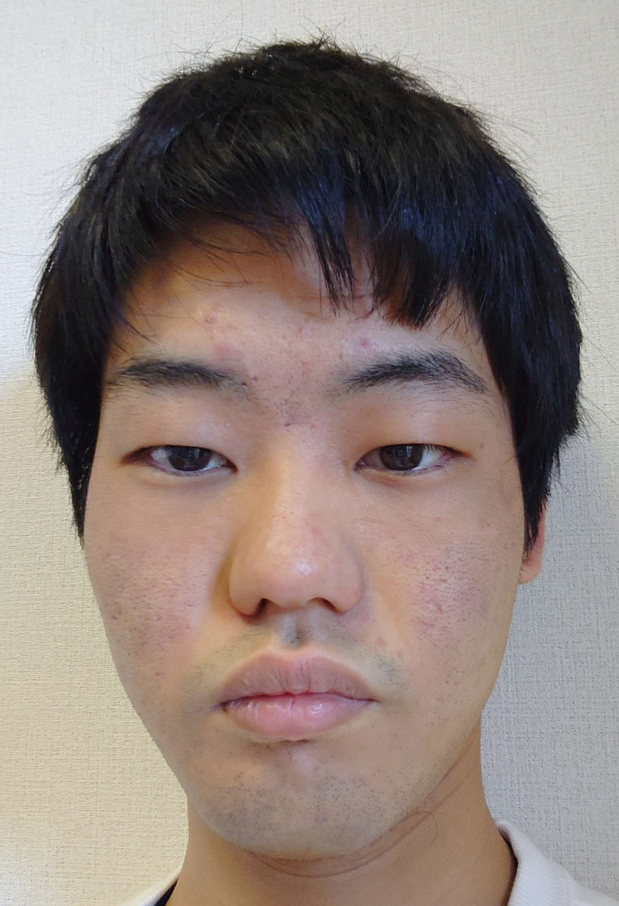
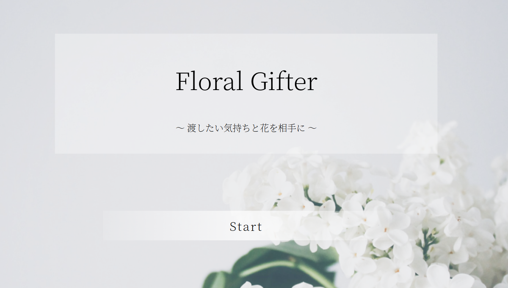
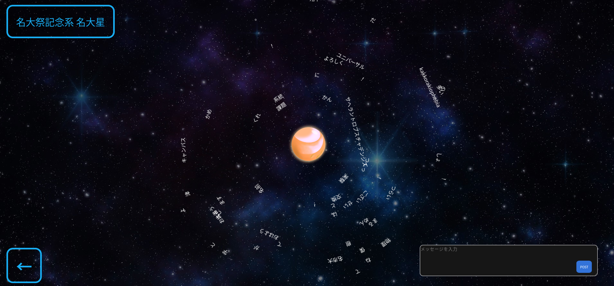
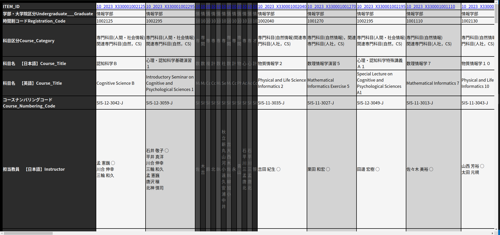

<
![[ICON]](/icon.svg)
P
o
r
t
f
o
l
i
o
槫林 優 (Kurebayashi Yu)
目次
基本情報
- 3
- 3
技能
- 4
- 5
- 6-9
個人情報
名前: 槫林 優 (クレバヤシ ユウ)
年齢: 19
所属: 名古屋大学情報学部コンピュータ科学科
学年: 学部2年 (2024年04月時点)
mail: nagoyayuu15 gmail.com

経歴
学歴
- 2020/4静岡県立榛原高校入学
- 2023/3静岡県立榛原高校卒業
- 2023/4名古屋大学情報学部コンピュータ科学科入学
職歴
- 2023/10匠ゼミナール 香流校 入社(アルバイト)
- 以上
学業成績
- SML (Mathematics for machine learning)A+
- 情報セキュリティとリテラシー１A
- 情報セキュリティとリテラシー２A+
- プログラミング１A+
- プログラミング２A+
- 他
計53単位 GPA 4.08
既習技術
python:
最も親しみ深い言語です。中学生の頃、batch scriptより利便性の高い言語を探していたとき見つけたことをきっかけに、独学で習得してきました。
型付けが緩く、書くことが少なくて済むというのは初学者としてはかなりありがたい特徴でした。
ライブラリの使い方などは、まだまだ習熟が足りないと自覚していますが、素のPythonについてはそこそこ深いところまで知っているという自負があります。
最近ではちゃんと型をつけれるようになってきたので、型チェッカーの恩恵も受けられていい感じです。
しかし、有名ライブラリなどで、まだ型アノテーションと実態があっていなかったりAnyが帰ってきたりするので、今後に期待したいところ。
大学でpythonの授業が2つあったのですが、どちらも評定はA+でした。
C:
授業で初めて扱いましたが、その授業の評定はA+でした。
C言語を学ぶことによってメモリへの造詣が深まったと思います。アセンブリ言語にチャレンジする前には必ずC言語は習熟しておいたほうがいいと感じました。
一方で、これを実務で使いたいとは全く思いませんでした。確かに早いのかもしれませんが、Rustのほうがよっぽど使いやすいし安全だと思います…。ホワイトハウスもそう言ってる。
しかし多くのプログラム、例えばCPythonなどがCで書かれているので読めるようにはなるべきですね。
HTML/CSS/JS:
当然のことながら、Webページの制作に使いました。このポートフォリオもHTMLとCSSをガリガリ書いて作りました。
divタグに頼り過ぎな気がしなくもないですが、意図する見た目や動作にすることはできるようになったと思います。
今後はもう少し保守性の高い書き方ができるようになりたいです。
Rust:
授業でC言語を勉強する前に勉強し始めたので、人生で初めて勉強した低級言語になります。後に習ったC言語と比較してもかなりモダンでいい感じだと思います。
まずは入門書で基礎を知り、その後ネットで調べつつ…という形で学習しました。
実際やって見る前は厳格な型付けと所有権があって難しい言語だ…と聞いていたのですが、むしろ”継承より合成”という考え方のほうが自分には難しく感じられます。
所有権については書いているうちになれてしまいますし、厳格な型付けについてはGenericsがしっかり活用できればむしろ書きやすい要素です（補完さまさまです）。
一方で、長いことclassを前提にしてプログラムを書いていたので、traitとstructで組み立てていくという方法がなかなか馴染みません。
この辺りを身に着けてRustyなコードがかけるようになればなぁと思います。
プロダクト
サークル活動
アプリ開発団体jackというサークルに所属しており、そのメンバーとして開発したプロダクトがいくつかあります。
FloralGifter:
3日間でなにかプロダクトを作り上げるというサークルのイベントに参加して制作しました。
floral-gifter.netlify.appにホストされています。ChatGPTを利用して贈る花を選定するというサービスで、私はバックエンドで花の画像を取得してくる部分を担当しました。
PythonのRequestsを使ってWebサービスのAPIと格闘していました。残念ながらAPIKeyが切れているので、機能は停止しています。
https://github.com/jack-app/jackHack2023_B

プロダクト
サークル活動
snspace:
2023/06の名大祭で発表するためにチームで開発したものです。プロジェクト初期に精力的に動きました。
入力した文章が単語ごとに分割されて、星の周りをぐるぐる飛び回る、というものです。
入力した文字をバックエンドのMeCabに渡して単語ごとに分割したり、入力された内容を保存、読み出ししたりできるようにしました。（この時点ではまだリレーショナル・データベースは用いていませんでした。）
また、円の周りを文字が回るようにCSSでアニメーションさせたりもしました。
https://github.com/jack-app/meidaisai2023_H

プロダクト
個人活動
syllabusConverter:
大学のシラバスが複数の授業の比較にあまりにも向いていなかったので、スクレイピングしてこちらで整形しようとしたものです。結局学外向けシラバスなので情報が乏しく、実用性はあまりありませんでした。
また、どうせなら公開しようという程度にreadmeを書いたので使い方も複雑怪奇でユーザーフレンドリーと言えるものではないですね。
https://github.com/nagoyayuu15/SyllabusScraping

TranslatorBot:
日本の英語を扱えない友人とフィンランドの友人がいるDiscordサーバーに参加しており、
そこでのコミュニケーションが円滑に行えるように、TypeScriptによって翻訳Botを作成しました。
結局、ほとんど活用されることはなかったのですが…。
TypeScriptを使った理由はJavaScriptにClassがなかったために非常にやりづらいと感じたからです。
静的型付けの安定性に魅せられたという面もあります。
https://github.com/nagoyayuu15/translator
プロダクト
個人活動
portfolio:
HTML/CSS/JSを用いたオーソドックスな技術構成で、フレームワークなどは特に使っていません。頻繁に更新する要素を外部に分離し、動的に読み込むなど工夫しました。
デザインの方もスマホ表示、ＰＣ表示の両方に対応できるように頑張ってみました。
Weblogページは特にダイナミックにリソースを読み込みます。この仕組みを作る過程でかなりPromiseと仲良くなった気がしました。
レスポンシブ対応も最初は2段階だけだったのですが、3段階に増やしてみたりと色々こだわって見ました。
だた、隔離した部分以外の保守性が非常に悪い（
特にCSSは地獄絵図です。HTMLもiframeを使わずに動的に読み込む関係で、はじめから把握していないと何がどう読み込まれるのか、わからなくなっても不思議ではないことになっています。
）のでその辺りは要改善だなと思います。
WebサーバはNginxを使っています。特に理由はなかったのですが、後々調べてみたところApacheより同時接続に強いサーバーらしいです。
その代わりに複雑な処理は苦手だとか。
このポートフォリオに何千とアクセスが集中するとは考え難いですが、バックエンドでの処理は無いと言ってもいいくらいの構成なので、
奇しくもこのポートフォリオの配信にはNginxがぴったりだったみたいですね。
また、ポートフォリオの作成にあたって、アプリ開発団体jackのメンバーの皆様に改善点を指摘していただいたり、改善案を提案して頂いたりしました。
そのおかげでポートフォリオのクオリティを増すことができました。この場を借りてお礼させていただきます。
https://github.com/nagoyayuu15/WebSite